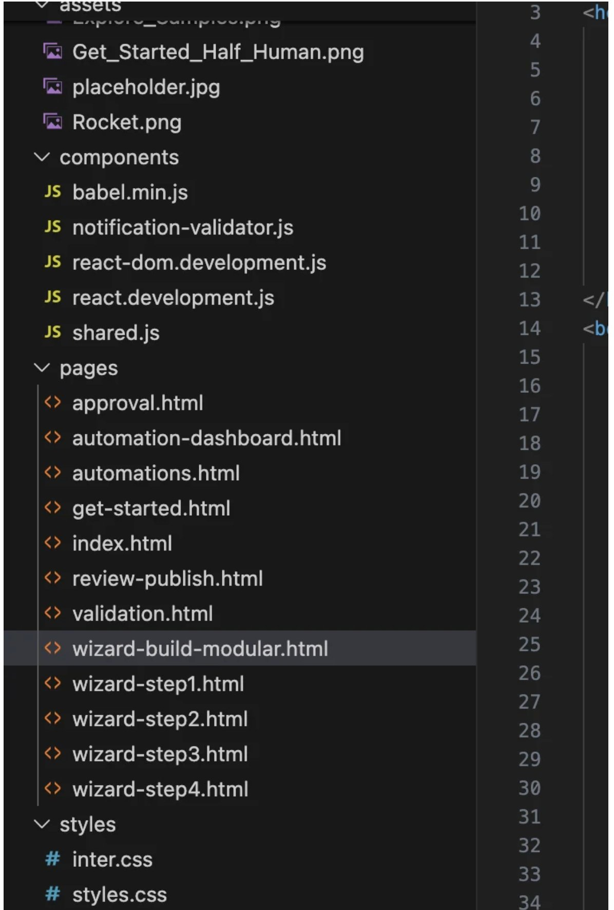
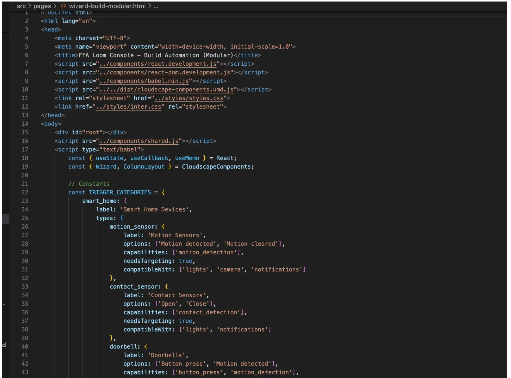
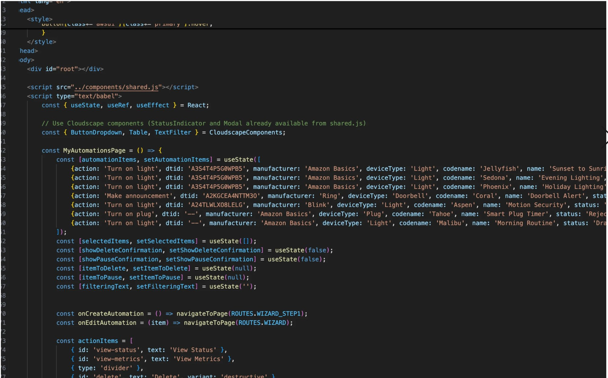
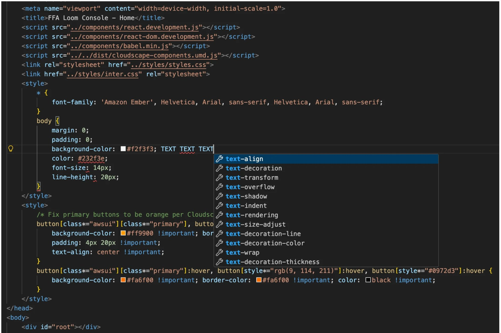

A production-code prototype for stackable, multi-device Alexa routines — designed, architected, and engineered by me using React, AWS Cloudscape, and Amazon's internal LLM tools.
Amazon's device ecosystem lets customers create simple automations — turn on a light, lock a door. But the complexity ceiling is low. There's no way to stack routines across device types, chain triggers conditionally, or manage automations at fleet scale. This project solves that.
I designed and built a fully functional multi-page React application — not a Figma prototype, not a clickable mockup. Production-quality code using AWS Cloudscape components, real device data models, and a 4-step wizard flow for creating complex cross-device automations.
Full walkthrough of the Frustration Free Automation prototype.
The application spans 12 pages across assets, components, and page-level views — including a multi-step wizard, automation dashboard, validation system, approval flow, and notification handling. Every page is functional React with real state management, not static HTML.

Full project structure: 12 page views, shared component library, custom styles, asset management.
The codebase uses React hooks (useState, useCallback, useMemo), AWS Cloudscape component library (Wizard, ColumnLayout, Table, ButtonDropdown), and a modular trigger category system that maps device capabilities, compatibility rules, and targeting requirements.

Trigger category data model: device types, capabilities, options, compatibility mapping — all structured for extensibility.

MyAutomationsPage component: real device data, state management, navigation routing, action handling.

Custom styling layer on top of Cloudscape: Amazon Ember font stack, branded button overrides, hover state management.
My team uses Cline and Kiro CLI paired with Visual Studio Code — Amazon's internal LLM-assisted development tools. I combined these with manual coding and design expertise to produce a living, interactive prototype that stakeholders could actually use, not just watch a screen recording of.
This is what happens when a designer writes production code. The gap between "what we designed" and "what engineering built" doesn't exist, because they're the same artifact.